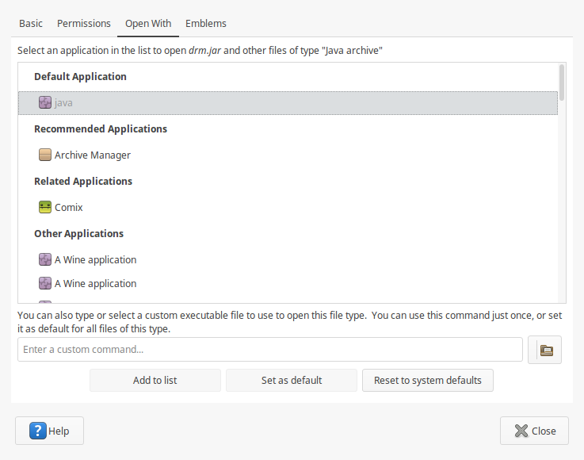

Mở file jar bằng cách double click
File jar bản chất nó là một file ZIP. Mặc định khi sử dụng Cinnamon trong Linux Mint, khi chúng ta double-click một file jar thì ứng dụng Archive Manager sẽ được gọi để mở file đó.
Tuy nhiên, nhiều trường hợp file jar là một file chạy, và chúng ta muốn double-click để chạy file đó.
Chuột phải một file jar nào đó, chọn "Properties", mở tab Open With
Ở mục "Enter a custom command..." nhập vào:
java -jarBạn cũng có thể chọn command đó là default.